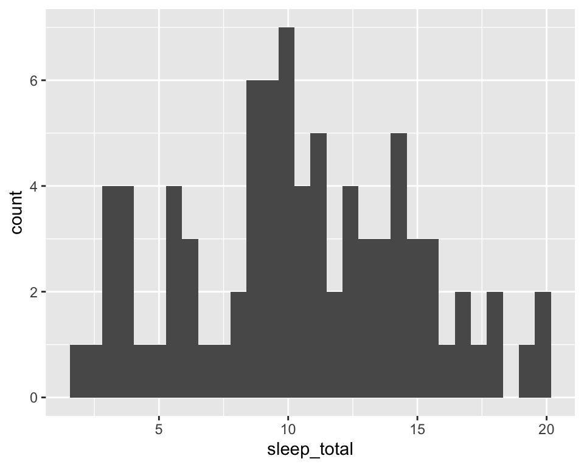

Bioinformatics introductory course - MSc Molekulare Biotechnologie
2024-03-04
Introduction
Where to start
Installing R and RStudio
For this tutorial, you will need to install both R and RStudio. Rstudio is the most commonly used IDE (or Integrated Development Environment) for R, and it will use the R version installed on your computer. RStudio is meant to make R programming quite visual and way easier for you as a beginner.
Start by installing R and RStudio.
Courses
It is recommended that you take the introductory classes for R in DataCamp to get to know this language before you start coding here. In this course you will learn to use RStudio, a software that allows you to use R in a very user-friendly way.
You can find more resources here:
- R Tutorial for Beginners at guru99
- R courses at Babraham Bioinformatics
- R for Data Science
- R markdown at RStudio and in this cheatsheet
- Youtube tutorial on ggplot2 with one of its developers
R
R is a powerful programming language for the analysis of data.
Two notes of advice about good practice now that your journey is about to start:
Commenting: Comment your code as you go with
#! This way you avoid forgetting the meaning of a given line. This is also important if you want to share your code with others. Trust me, you will not remember what you are writing today in this class one week from now, so it will be best to have a reminder.
Clean and tidy code: See that weird line in the middle of your script/markdown? This is meant to be a guideline about code length. If your code is so long that it crosses the line, please find a way to make it shorter. In addition, avoid making your chunks too long and make separate markdowns or scripts for each class or topic, it will keep everything more organised and easy to track.
RStudio
We will work with RStudio that is composed of 4 main windows/panels.
The Editor, the Environment, the Console, and the Files window/panel. Order can vary.
![In Editor (1), you can find the area where you usually write most code, like a Rscript or a Rmarkdown. Environment (2) shows you your variables, history, among others. Here, you can see any variable you define in your session. You can use this to do a very basic inspection of objects you create or import. Console (3) is where all your code gets processed when you run it. The console remembers (which is why when you click arrow up or down, it shows you commands you ran before), but it does not keep! Therefore, ALWAYS write the meaningful code lines in a script/markdown (1). Lastly, 4 can be used for browsing documents (Files), see the plots you produce (Plots), searching/managing packages (Packages), or find help on functions (Help).](figures/RstudioLayout.png)
Variable assignment in R
You can start by testing one of the most basic tasks - variable assignment. Variable assignments in R can be done using either the <- symbol, or the = symbol.
You can now run print(a) and print(hello).
Note that after assignment both variables (a and hello) are listed in the “Environment” window of RStudio.
R is case sensitive.
hellois a known variable, butHellois not!
You can remove variables too…
Classes
In the same way that a orange is a fruit or Malta is a country, any R variable corresponds to a class and holds a given structure. Classes
Let us say you generate a new variable (name). How can you know more about it?
The function str() gives you the structure of the variable.
## chr "Marie"where chr stands for character, the class of this variable.
The function class() gives you the class of the variable.
## [1] "character"Logical operations
We can perform tests on simple variables using the ==, >,< operators:
## [1] FALSEThe output of this test will be either FALSE/TRUE. You can test these using numbers too:
## [1] TRUEVectors
We can make any vector using c(). Try it with some numbers.
If you want to identify the specific number of this vector by position, you can use square brackets. Like this:
Matrixes
A matrix is a two-dimensional array of numbers. They are defined using the matrix() function as follows:
Take note of the difference between byrow=FALSE and byrow=TRUE.
x <- c(1, 2, 3, 4, 5, 6)
X <- matrix(data = x, nrow = 2, ncol = 3, byrow = TRUE)
X <- matrix(data = x, nrow = 2, ncol = 3, byrow = FALSE)Do you understand all parameters (“nrow”, “ncol”, “byrow”) of the
matrix()function? What happens if you do not specify “byrow” as TRUE or FALSE?
You can ask for the dimensions of a matrix (and see later also for data frames) using the function dim(). Do it for X.
To access the elements of a matrix, it is similar to the vector but with 2 indexes:
Dataframes
Data frames are like matrices, but they can contain multiple types of values mixed.
We can create a data frame using the data.frame() function. We can also convert a matrix into a data frame with the as.data.frame() function.
We can prepare three vectors of the same length (for example 4 elements) and create a data frame:
Name <- c("Leah", "Alice", "Jonas", "Paula")
Age <- c(21, 22, 20, 22)
Course <- c("Mathematics", "Physics", "Medicine", "Biology")
Place_of_birth <- c("USA", "Germany", "Germany", "France")
Students <- data.frame(First_Name = Name,
Age = Age,
Course = Course,
Place_of_birth = Place_of_birth)
Students## First_Name Age Course Place_of_birth
## 1 Leah 21 Mathematics USA
## 2 Alice 22 Physics Germany
## 3 Jonas 20 Medicine Germany
## 4 Paula 22 Biology FranceWe can again access specific elements in a similar manner to the matrix before. Try some of these examples:
R Markdown
R Markdown is a simple formatting syntax for authoring HTML, PDF, and MS Word documents. You will be working with R Markdown during this course. For more details on using R Markdown see http://rmarkdown.rstudio.com or https://www.markdownguide.org/basic-syntax/.
R instructions in a markdown file are written in a “chunk”, the one below.
Chunks can be added using the +C icon at the top right corner of this panel/editor.
There is also a keyboard shortcut for it.
# Sentences written after "#" are comments. Comments are ignored during the execution of the code.
# print "Hello world!" on the screen.
print("Hello world!")## [1] "Hello world!"What happens in the editor if you remove the second parenthesis? Do you see the red cross appearing? You can click on it and read the comment.
And what happens if you press “enter” while the second parenthesis is missing?
R will usually let know know when there is a simple syntax mistake like this one on your code.
Advanced data manipulation with tidyverse
Tidyverse is a set of packages often used to manipulate data. You can think of tidyverse as a variation of the original R, which is meant to be a grammar specific to data manipulation.
You can install these through:
And load it using
## ── Attaching core tidyverse packages ──────────────────────── tidyverse 2.0.0 ──
## ✔ dplyr 1.1.4 ✔ readr 2.1.5
## ✔ forcats 1.0.0 ✔ stringr 1.5.1
## ✔ ggplot2 3.4.4 ✔ tibble 3.2.1
## ✔ lubridate 1.9.3 ✔ tidyr 1.3.1
## ✔ purrr 1.0.2
## ── Conflicts ────────────────────────────────────────── tidyverse_conflicts() ──
## ✖ dplyr::filter() masks stats::filter()
## ✖ dplyr::lag() masks stats::lag()
## ℹ Use the conflicted package (<http://conflicted.r-lib.org/>) to force all conflicts to become errorsWe will learn a couple of functions from this framework which will make the next tasks a lot easier. Tidyverse works with the tibble class, which is very similar to a the dataframe class, only faster and tidier.
Start by loading a default tibble including sleeping patterns from different mammals. It also includes information on the animal order, genus, diet, or body weight. To do so, run the following:
We can start by inspecting msleep.
We can print the first rows of a dataframe using head(). Try it out.
## # A tibble: 6 × 11
## name genus vore order conservation sleep_total sleep_rem sleep_cycle awake
## <chr> <chr> <chr> <chr> <chr> <dbl> <dbl> <dbl> <dbl>
## 1 Cheetah Acin… carni Carn… lc 12.1 NA NA 11.9
## 2 Owl mo… Aotus omni Prim… <NA> 17 1.8 NA 7
## 3 Mounta… Aplo… herbi Rode… nt 14.4 2.4 NA 9.6
## 4 Greate… Blar… omni Sori… lc 14.9 2.3 0.133 9.1
## 5 Cow Bos herbi Arti… domesticated 4 0.7 0.667 20
## 6 Three-… Brad… herbi Pilo… <NA> 14.4 2.2 0.767 9.6
## # ℹ 2 more variables: brainwt <dbl>, bodywt <dbl>Filter based on conditions
Now that we know how this dataset looks like, we can start doing more with it. Let us see the information for the domestic cat.
We can do it using filter() on the genus column:
## # A tibble: 1 × 11
## name genus vore order conservation sleep_total sleep_rem sleep_cycle awake
## <chr> <chr> <chr> <chr> <chr> <dbl> <dbl> <dbl> <dbl>
## 1 Domest… Felis carni Carn… domesticated 12.5 3.2 0.417 11.5
## # ℹ 2 more variables: brainwt <dbl>, bodywt <dbl>We also use the %>% operator here. This is a pipe operator and you will use it very often.
To understand piping, let’s imagine you are making a three layer cake in a factory. Instead of manually carrying the cake from one station to another to add layers and frosting, you have a conveyor belt transporting the cake through the stations automatically to make the process much more efficient. Piping avoids that you have to create multiple intermediate objects to achieve your final result when performing multiple functions.
Try filtering other columns based on numeric conditions. Use
filter()to see which 7 animals in the datasets have a body weight superior to 200 (kg).
Select specific columns
Now, let’s say you want to select only specific columns. Use the select() function to select the columns name, order, and bodywt (body weight).
Operations on groups
We can assess the average (mean()) and standard deviation (sd()) body weight by animal order present. To do so, we will use summarise() and group_by() functions on the body_weights we generated previously.
group_by(): Assigns a group to a given set of rows (observations).
summarise(): Makes calculations for a given group based on the row values assigned to it.
body_weights %>%
group_by(order) %>%
summarise(mean_bweight = mean(bodywt, na.rm = T), # na.rm = T will exclude missing values (NA)
sd_bweight = sd(bodywt))## # A tibble: 19 × 3
## order mean_bweight sd_bweight
## <chr> <dbl> <dbl>
## 1 Afrosoricida 0.9 NA
## 2 Artiodactyla 282. 376.
## 3 Carnivora 57.7 60.6
## 4 Cetacea 342. 401.
## 5 Chiroptera 0.0165 0.00919
## 6 Cingulata 31.8 40.0
## 7 Didelphimorphia 1.03 0.940
## 8 Diprotodontia 1.36 0.368
## 9 Erinaceomorpha 0.66 0.156
## 10 Hyracoidea 3.06 0.496
## 11 Lagomorpha 2.5 NA
## 12 Monotremata 4.5 NA
## 13 Perissodactyla 305. 187.
## 14 Pilosa 3.85 NA
## 15 Primates 13.9 21.5
## 16 Proboscidea 4600. 2904.
## 17 Rodentia 0.288 0.371
## 18 Scandentia 0.104 NA
## 19 Soricomorpha 0.0414 0.0289Pretty plots using ggplot2
One of the many advantages of tidyverse is how compatible it is with ggplot2. Thanks to the wonders of the %>% operator, you can generate a basic plot instantly without creating intermediate objects.
The structure of any ggplot() is always based on two essential elements: the aesthetics (aes()) and the plot layers (named as geom_something(). aes() is always found within the ggplot() function.
Histogram
Let us start by making an histogram, as we will work with distributions over this course. If we want to see the global distribution of sleep time (total, in hours) for all animals in the dataset, we will use geom_histogram(). Like this:
ggplot(msleep, # start by picking the dataframe to plot
aes(x = sleep_total)) + # column to use for y-axis
geom_histogram() # plot layer for histogram
Scatter plot
For example, if we want to see the relationship between the sleep time (total, in hours) and the body weights, we use this formula:
ggplot(msleep, # start by picking the dataframe to plot
aes(x = bodywt, # column to use for x-axis
y = sleep_total)) + # column to use for y-axis
geom_point() # plot layer for points
The x-axis looks a little squished, so it will be hard to view many of the trends. We can then log-transform this scale using the
log()function. Try it out!
There are multiple options for geom_X() depending on the information you are plotting. You can find all possibilities here.